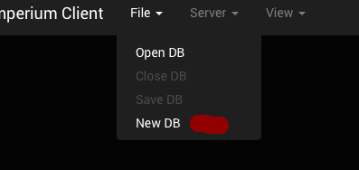
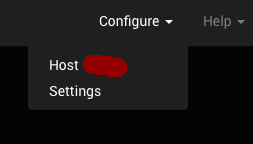
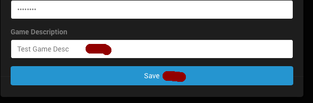
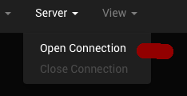
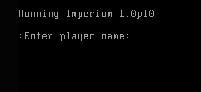

Imperium is a networked multiplayer game of space exploration and conquest. jsImp is a client for Imperium written using HTML5 & JavaScript
Steps to start using jsImp:
- Select the "File->New DB" menu option

- Select the "Configure->Host" menu option

- Be sure and enter a name for this configuration, then click "Save"

- Select the "Server->Open Connection" menu option

- You should see the login prompt:

___More Text Here___